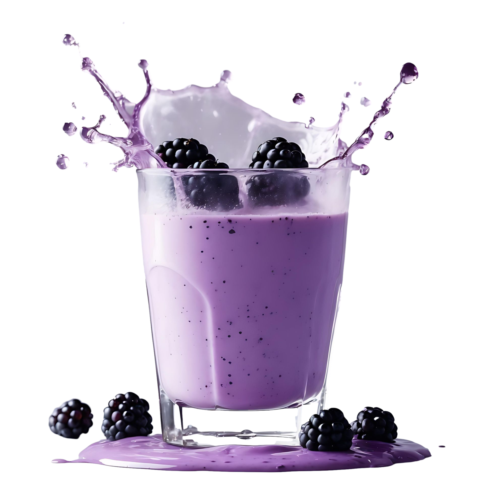
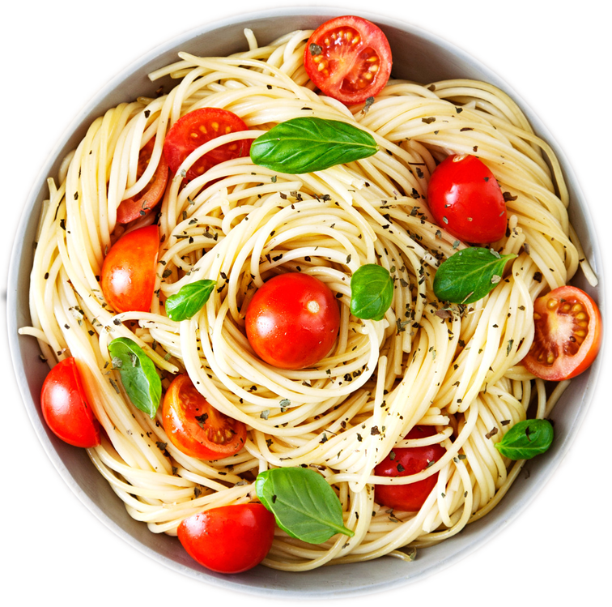

Gunaforycter
Signature

Sunset Flame
Tropical & Refreshing
$12.94
Tropical Passion
Fruity & Exotic
$11.04

Citrus Dawn
Citrusy & Energizing
$10.13
New

Berry Breeze
Sweet & Cool
$9.48

CHEF'S SPECIAL
Bouliouts for laguancns
Experience our signature culinary creations.
Meticulously crafted with premium ingredients to deliver exceptional flavors and an unforgettable
dining experience. Perfect for sharing or savoring on your own. Each dish is thoughtfully prepared by our expert chefs using only the finest seasonal ingredients sourced from local suppliers. Our commitment to quality ensures every bite is a memorable culinary adventure.